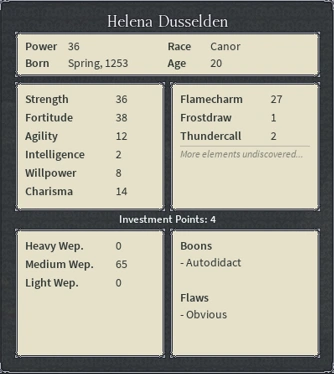

The progression system in Deepwoken allows the stats you invest in determine what kind of talents you get for your character.
The talents in this game can make or break your build, so be careful.
Example of Attributes GUI.
For example, if you were to focus your points into Fortitude, you would roll talents that pertain to that category.
In the current Deepwoken meta, high health builds with huge damage output tend to remain the strongest.
People usually make these builds with high fortitude and use a heavy weapon.
This is subject to change though, as the Deepwoken developers make balance changes every week. So be on the lookout!